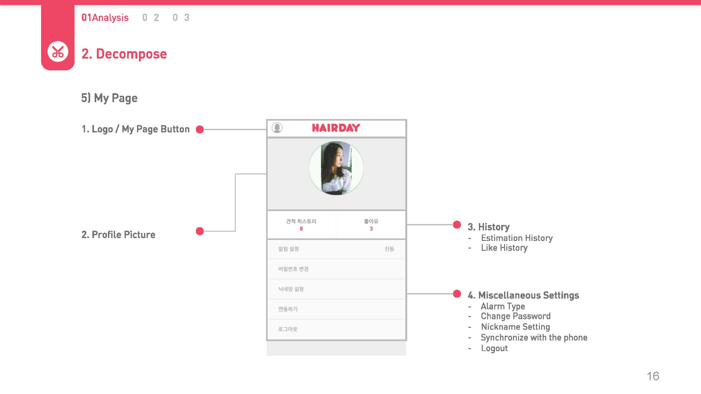
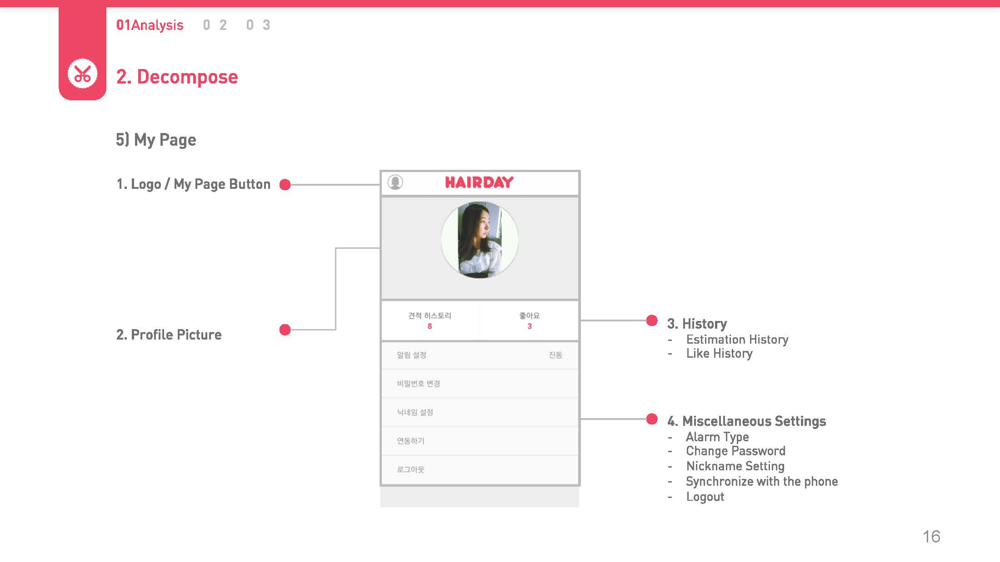
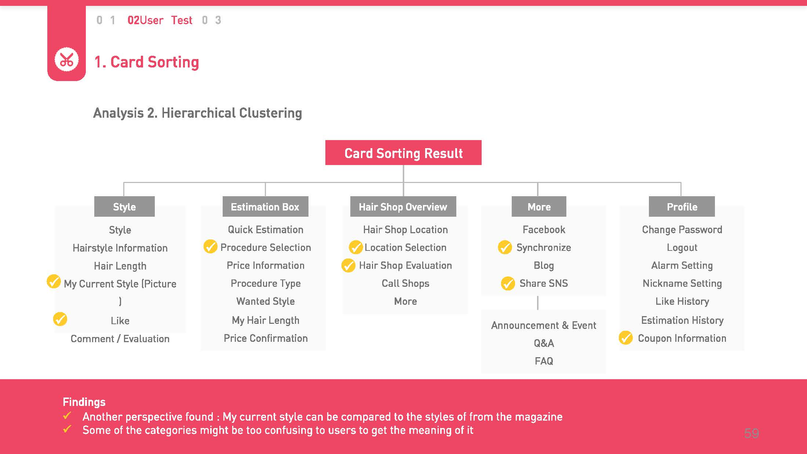
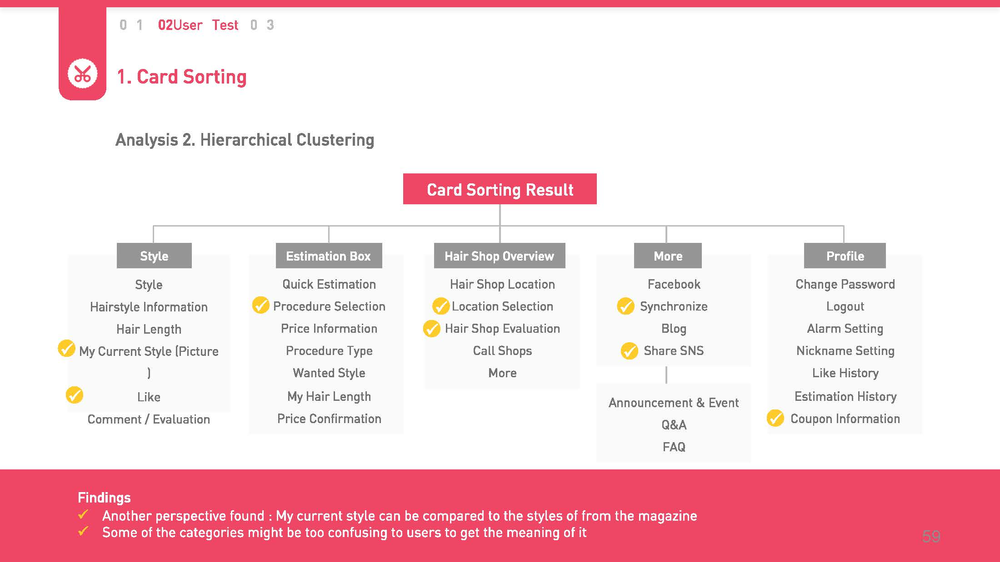
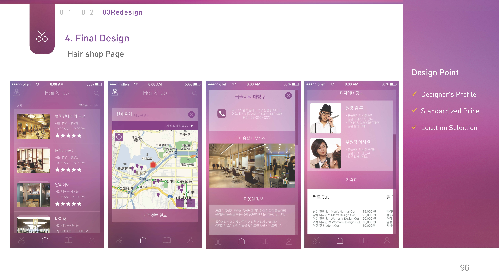
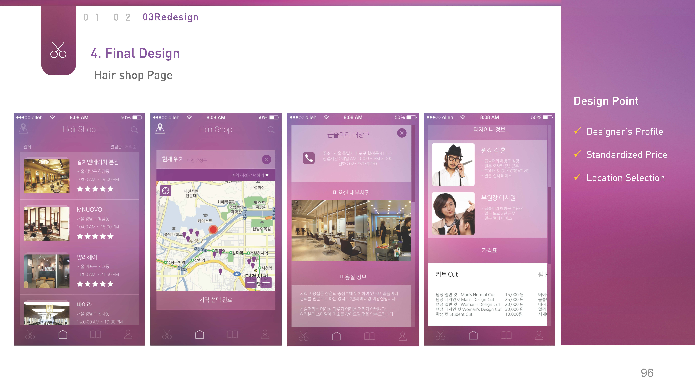

>UX Design/Research : Hairday
- Date:2016
- Category:UX Design, UX Research
- Tags:UX Design
This project is to redesign an existing application in the market with thorough UX analysis & User study
Before
SERIAL EFFECTS : It gets unusuable quickly if any of the cup inside the collector got stuck in the middle of the tunnel. Most of the situations occur when there still is remained liquid inside.

 

Analysis
Our group consisting of 4 members conducted
Heuristic Evaluations / Cognitive Walkthrough for application analysis and
Card Sorting /Focus Group Interview / User Test
Following are the summaries of the problems we found from the analysis.
 



Redesign Concept
Focusing on the user's comment that the hair application is only used when they are at the hair shop, we planned to change the application to everyday style magazine, making more useful for everyday information


After
The team emphasized two key concepts. Magazine View / Wheel Navigation and utilized Line UX / Blurred Backgrounds, current trends of sophisticated UX Design
 
